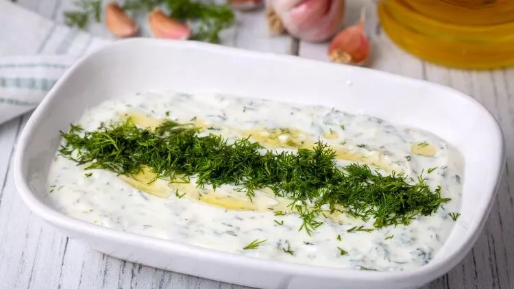

<- Back to Mainpage
Haydari

I live in Turkey and love ordering haydari at restaurants or picking it up from the deli section at the market. It is a thick and tangy Turkish yogurt dip best served with meat kebab and pita bread.
Ingredients
- 1 (16 ounce) container plain yogurt
- 5 cloves garlic
- 1 pinch salt
- 1 bunch fresh dill, chopped
- 1 bunch fresh parsley, chopped
- 1 (4 ounce) package cream cheese, softened (Optional)
- 2 mint leaves, for garnish
Steps
- Line a colander with two layers of cheesecloth and place over a medium bowl. Place the yogurt on the cheesecloth and cover the colander with plastic wrap. Allow yogurt to drain 8 hours or overnight.
- Scoop the drained yogurt into a mixing bowl. Mash the garlic cloves with the salt into a fine paste; mix into the yogurt. Stir the dill, parsley, and cream cheese into the yogurt and garlic mixture. Spread onto a dish and garnish with the mint leaves to serve.